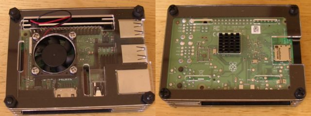

ラズパイ2台目
ラズパイが思いのほか面白いので、２代目を購入。名前はまだ付けていない。
今回は筐体とファンがついている奴を買った。

SDカードのフォーマット : 15分
SDカードフォーマッターで16GByteのSDカードを上書き。
ボリュームラベルは「RASPI2」にした。
NOOBSをSDカードにコピー : 2分
Raspbianをインストール : 35分
日本語環境をインストール
$ sudo apt-get -y install ibus-mozc
アップグレード : 1時間53分
$ sudo apt-get upgrade
やけにwpasupplicantというのが長い。どうやらwifiをあやつるものらしいのだけど。
wolf workが関係しているらしいのだけど、かれこれこれだけで、10分以上やっている。
.bash
.bashと.bash_aliasesをgithubからwgetします。
vimをインストール
$ sudo apt-get -y install vim
githubから、.vimrcをwidgetします。
I2CとSPIをON
/boot/config.txt
dtparam=i2c_arm=on
#dtparam=i2s=on
dtparam=spi=on
のように、i2cとspiのコメントアウトをはずして、
$ sudo reboot
[applications menu]→[設定]→[Raspberry Piの設定]→[インターフェイス]と進むと、SPIとI2Cが「有効」になっているのが確認できます。
gitの設定
gitコマンドはRaspberry Pi3B+では、インストール済です。
$ cd
$ ssh-keygen
Enter file in which to save the key (/home/pi/.ssh/id_rsa): /home/pi/.ssh/id_rsa
Enter passphrase (empty for no passphrase):
Enter same passphrase again:
$ chmod 440 ~/.ssh/id_rsa.pub
$ chmod 400 ~/.ssh/id_rsa
そしたら、
id_rsa.pubの方をgithubのsshとしてコピペします
コピペ時にはマウスを使うと思いますが、そのときに、マウスの右クリックで、vimはヴィジュアルモードになってしまって、うまくできません。そのときには「:set mouse=」と入力して、マウスの影響を受けないようにします。
がらめきドットコムPowered by RaspberryPi3B+ Raspbian stretch